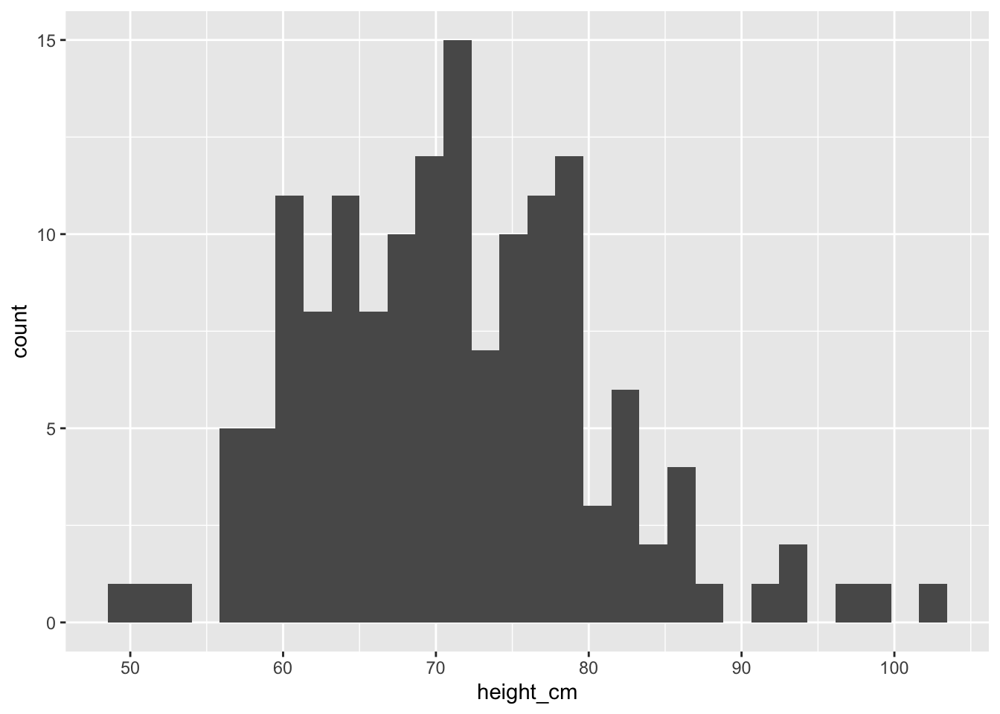
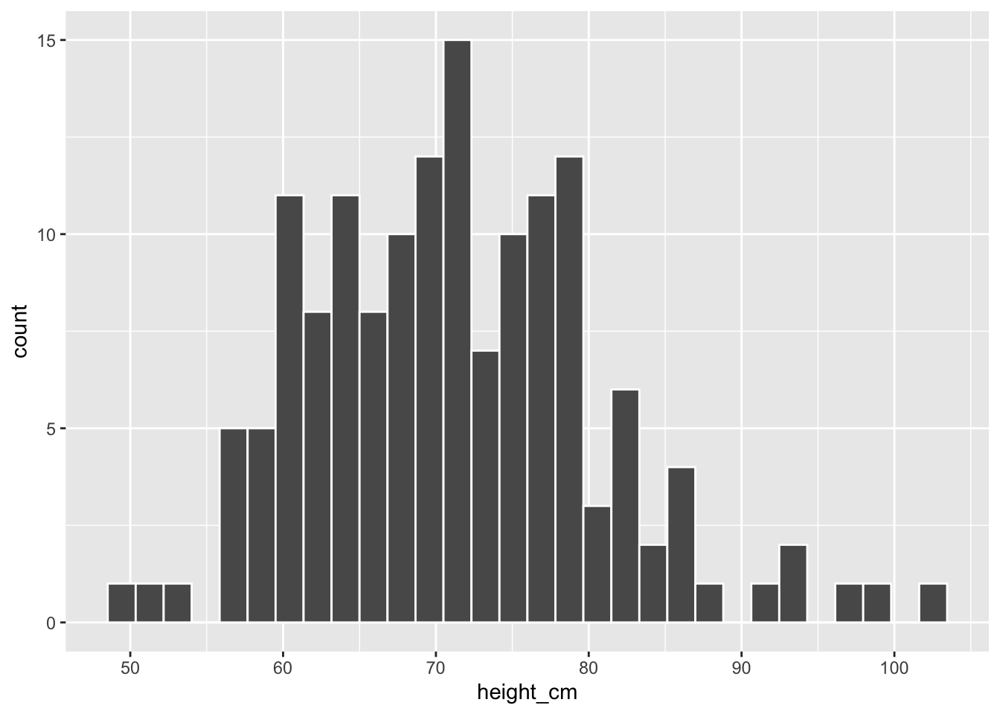
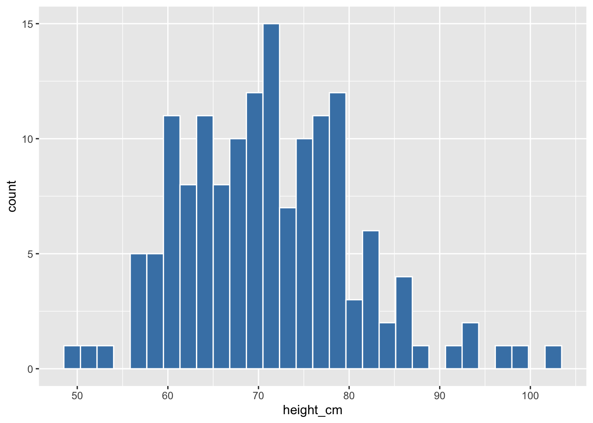
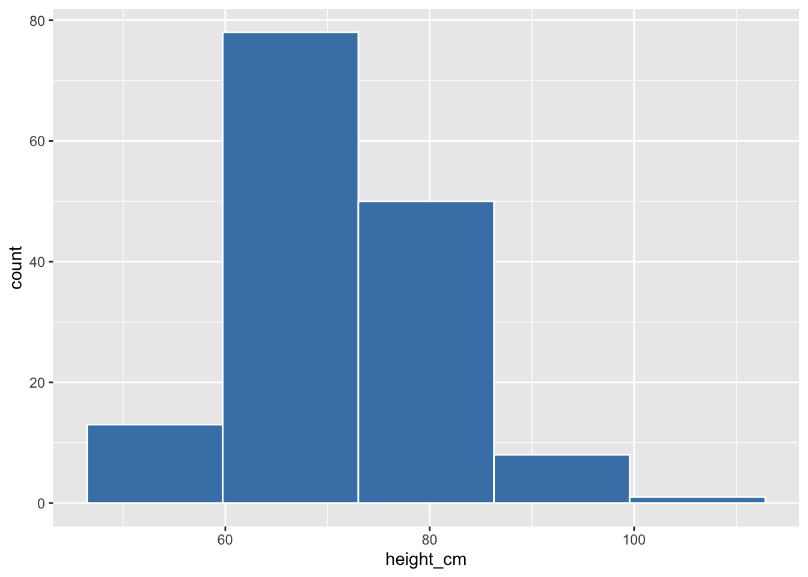
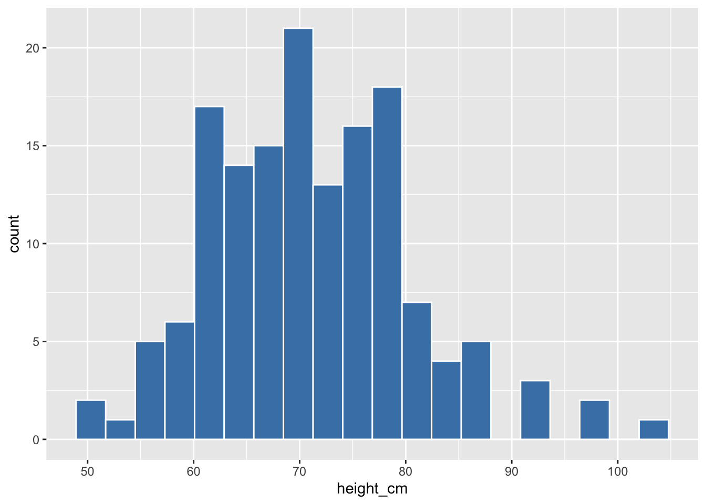
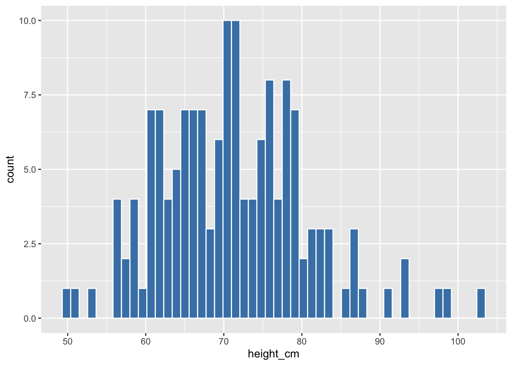
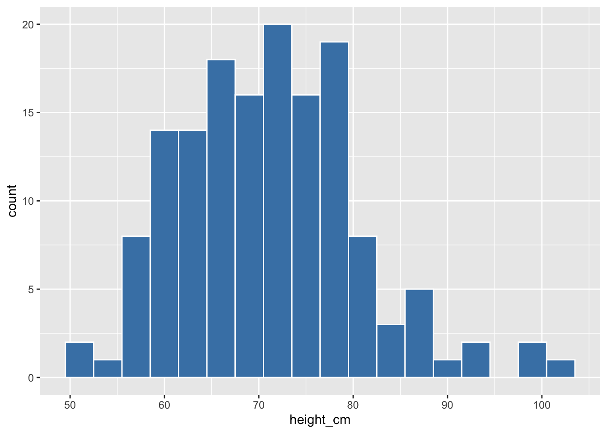
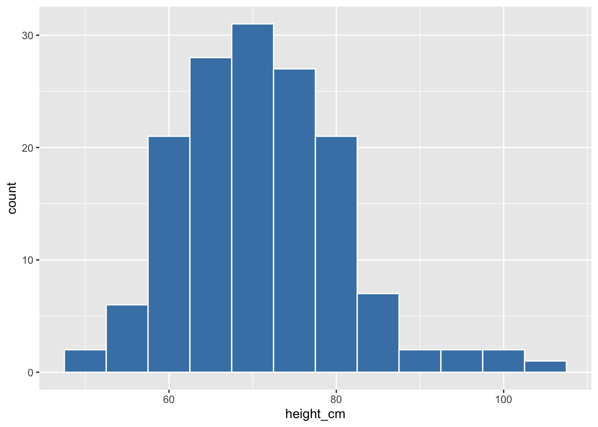
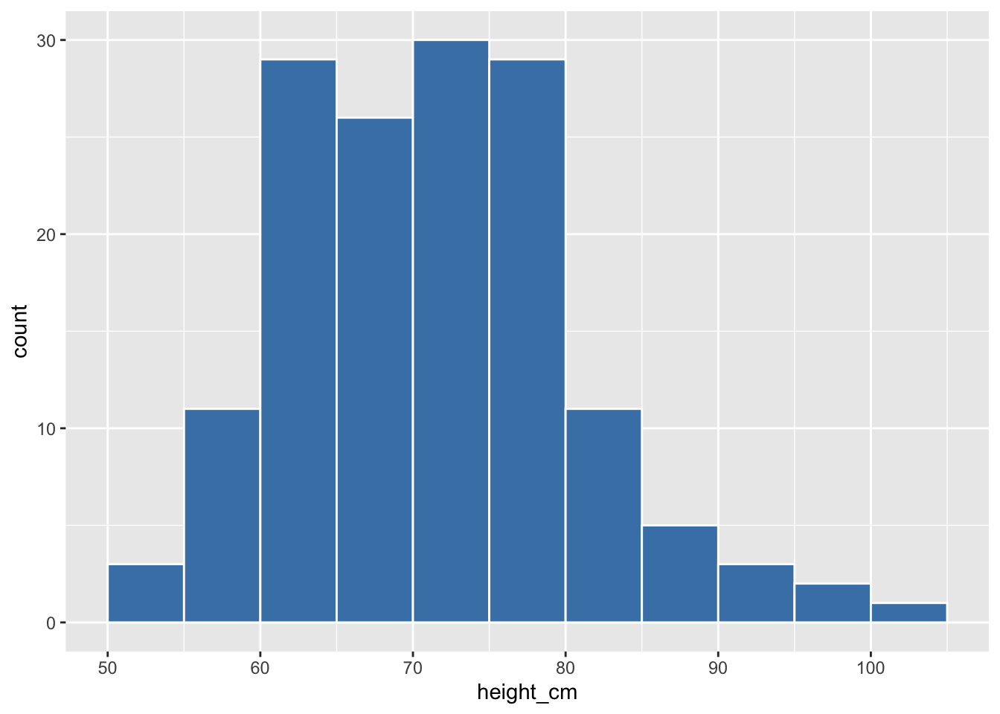

pacman::p_load(tidyverse,
here)20 Histograms with {ggplot2}
20.1 Histograms with {ggplot2}
20.2 Learning Objectives
By the end of this lesson, you will be able to:
- Plot a histogram to visualize the distribution of continuous variables using
geom_histogram(). - Adjust the number or size of bins on a histogram by with the
binsorbinwidtharguments. - Shift and align bins on a histogram with the
boundaryargument. - Set bin boundaries to a sequence of values with the
breaksargument.
20.3 Introduction
A histogram is a plot that visualizes the distribution of a numerical value as follows:
We first cut up the x-axis into a series of bins, where each bin represents a range of values.
For each bin, we count the number of observations that fall in the range corresponding to that bin.
Then for each bin, we draw a bar whose height marks the corresponding count.
20.4 Packages
20.5 Childhood diarrheal diseases in Mali
We will visualize distributions of numerical variables in the malidd data frame, which we’ve seen in previous lessons.
## Import data from CSV
malidd <- read_csv(here::here("data/clean/malidd.csv"))
Recap
These data were collected as part of an observational study of acute diarrhea in children aged 0-59 months. The study was conducted in Mali and in early 2020. The dataset records demographic and clinical information for 150 patients.
## View first few rows of the data frame
head(malidd)The dataframe has 21 variables, many of which are continuous, like height_cm, viral_load, and freqrespi.
20.6 Basic histograms with geom_histogram()
Now let’s use {ggplot2} to plot the distribution of childrens’ heights, which is recorded in the heigh_cm column of malidd.
The geom_*() function used for histograms is geom_histogram()
## Simple histogram showing the distribution of height_cm
ggplot(data = malidd,
mapping = aes(x = height_cm)) +
geom_histogram()`stat_bin()` using `bins = 30`. Pick better value with `binwidth`.
Side Note
If we don’t adjust the bins in geom_histogram(), we get a warning message. You can ignore this warning message for now, and will learn how to customize bins in the next section.
In the previous histogram, it’s hard to where the boundaries for each bin start and end since everything is one big amorphous blob. So let’s add borders around the bins:
## Set border color to "white"
ggplot(data = malidd ,
mapping = aes(x = height_cm)) +
geom_histogram(color = "white")`stat_bin()` using `bins = 30`. Pick better value with `binwidth`.
We now have an easier time associating ranges of cases to each of the bins.
We can also vary the color of the bars by setting the fill argument:
## Set fill color to "steelblue"
ggplot(data = malidd ,
mapping = aes(x = height_cm)) +
geom_histogram(color = "white",
fill = "steelblue")`stat_bin()` using `bins = 30`. Pick better value with `binwidth`.
Now that we can see the bars more clearly, let’s unpack the resulting histogram. Some questions we might want to answer are:
- What are the smallest and largest values?
- What is the “center” or “most typical” value?
- How do the values spread out?
- What are frequent and infrequent values?
We can see that heights range from 50 to 105cm. The center is around 70cm, most patients fall in the 60-80cm range, with very few below 55cm or above 90cm. Observe that the histogram has a bell shape, meaning that the variable has a normal distribution (more or less).
Practice
Plot a histogram showing the distribution of age (
age_months) inmalidd. Make the borders and fill of the bars “seagreen”, and reduce opacity to 40%.Building on your code for the previous plot, modify the axis titles to “Age (months)” and “Number of children”, respectively.
20.7 Adjusting bins in a histogram

After running code in previous examples, we got a histogram as well as a warning message about bins and bin width. The warning message is telling us that the histogram was constructed using bins = 30 for 30 equally spaced bins.
## Warning message tells us to change the default of 30 bins
ggplot(data = malidd ,
mapping = aes(x = height_cm)) +
geom_histogram(color = "white",
fill = "steelblue")`stat_bin()` using `bins = 30`. Pick better value with `binwidth`.
Unless you override this default number of bins with a number you specify, R will keep giving this message.
We can change the number of bins to another value using one of these three arguments to geom_histogram():
Set the number of bins with
binsSet the width of the bins with
binwidthSet bin boundaries
breaks
20.7.1 Set the number of bins with bins
Using the first method, we have the power to specify how many bins we would like to cut the x-axis up in by setting bins = INTEGER:
## Try different numbers of bins
ggplot(data = malidd ,
mapping = aes(x = height_cm)) +
geom_histogram(bins = 5,
color = "white",
fill = "steelblue")
ggplot(data = malidd ,
mapping = aes(x = height_cm)) +
geom_histogram(bins = 20,
color = "white",
fill = "steelblue")
ggplot(data = malidd ,
mapping = aes(x = height_cm)) +
geom_histogram(bins = 50,
color = "white",
fill = "steelblue")
Practice
Make a histogram of frequency of respiration (freqrespi), which is measured in breaths per minute. Set the interior color to “indianred3”, and border color to “lightgray”.
Notice that with the default of 30 bins, there are some intervals for which no bar is plotted (i.e., there were no observations in that range).
Low the number of bins until there are no empty intervals. You should choose the highest value of bins for which there are no empty spaces.
20.7.2 Set the width of bins with binwidth
Using the second method, instead of specifying the number of bins, we specify the width of the bins by using the binwidth argument in geom_histogram().
## Try different bin widths
ggplot(data = malidd,
mapping = aes(x = height_cm)) +
geom_histogram(color = "white",
fill = "steelblue",
binwidth = 3)
Looking at the range of the variable can help us choose an appropriate bin width.
range(malidd$height_cm)[1] 50.3 103.4ggplot(data = malidd,
mapping = aes(x = height_cm)) +
geom_histogram(color = "white",
fill = "steelblue",
binwidth = 5)
We can use the boundary argument to align the bins to the x-axis intervals.
## Set `boundary` equal to the low end of the variable
ggplot(data = malidd,
mapping = aes(x = height_cm)) +
geom_histogram(color = "white",
fill = "steelblue",
binwidth = 5,
boundary = 50)
Practice
Create the same freqrespi histogram from the last practice question, but this time set the bin width to to a value that results in 18 bins. Then align the bars to the x axis breaks by adjusting the bin boundaries.
20.7.3 Modify bin boundaries with breaks
Set breaks equal to a numeric vector in geom_histogram():
## Supply a vector that covers the range of values in height_cm
ggplot(data = malidd,
mapping = aes(x = height_cm)) +
geom_histogram(color = "white",
fill = "steelblue",
breaks = seq(50, 105, 5))
Practice
Plot the freqrespi histogram with bin breaks that range from the lowest value of freqrespi to the highest, with intervals of 4.
Next, adjust the x-axis scale breaks by adding a scale_*() function. Set the range to 24-60, with an intervals of 8.
20.8 Summary
Histograms, unlike scatterplots and linegraphs, present information on only a single numerical variable. Specifically, they are visualizations of the distribution of the numerical variable in question.
References
Some material in this lesson was adapted from the following sources:
- Ismay, Chester, and Albert Y. Kim. 2022. A ModernDive into R and the Tidyverse. https://moderndive.com/.
- Chang, Winston. 2013. R Graphics Cookbook: Practical Recipes for Visualizing Data. 1st edition. Beijing Köln: O’Reilly Media.
20.9 Solutions
.SOLUTION_q1()ggplot(data = malidd,
mapping = aes(x = age_months)) +
geom_histogram(fill = "seagreen",
color = "seagreen",
alpha = 0.4)`.SOLUTION_q2()ggplot(data = .malidd,
mapping = aes(x = age_months)) +
geom_histogram(fill = "seagreen",
color = "seagreen",
alpha = 0.4) +
labs(x = "Age (months)",
y = "Number of children").SOLUTION_q3() ggplot(data = malidd,
mapping = aes(x = freqrespi)) +
geom_histogram(fill = "indianred3",
color = "lightgray",
bins = 20).SOLUTION_q4()ggplot(data = malidd,
mapping = aes(x = freqrespi)) +
geom_histogram(binwidth = 2,
fill = "indianred3",
color = "lightgray",
boundary = 24).SOLUTION_q5()ggplot(data = malidd,
mapping = aes(x = freqrespi)) +
geom_histogram(fill = "indianred3",
color = "lightgray",
binwidth = 4) +
scale_x_continuous(breaks = seq(24, 60, 8))This work is licensed under the Creative Commons Attribution Share Alike license.